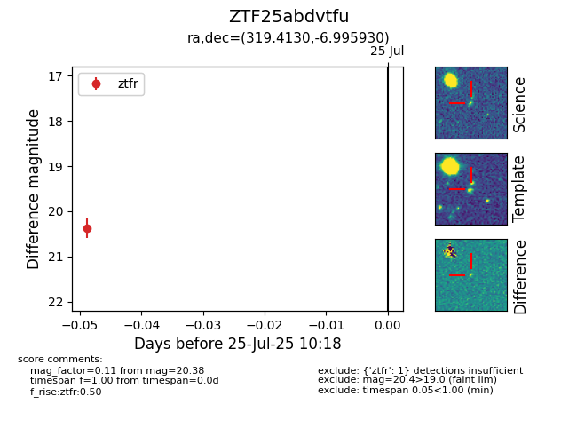

Target ZTF25abdvtfu at 2025-07-25 10:18, see:
FINK: fink-portal.org/ZTF25abdvtfu
Lasair: lasair-ztf.lsst.ac.uk/objects/ZTF25abdvtfu
ALeRCE: alerce.online/object/ZTF25abdvtfu
alt names
ZTF25abdvtfu (ztf,fink)
coordinates:
equatorial (ra, dec) = (319.4130,-6.99593)
galactic (l, b) = (44.3583,-35.56634)
photometry
last ztfr=20.38
1 ztfr detections
